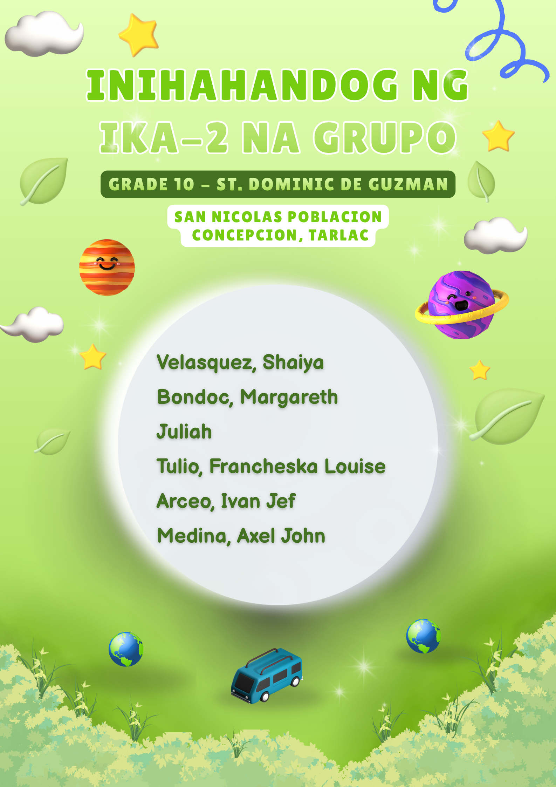
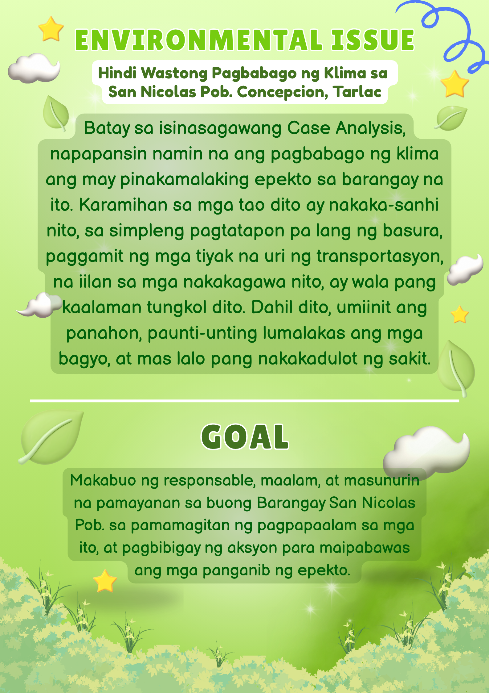
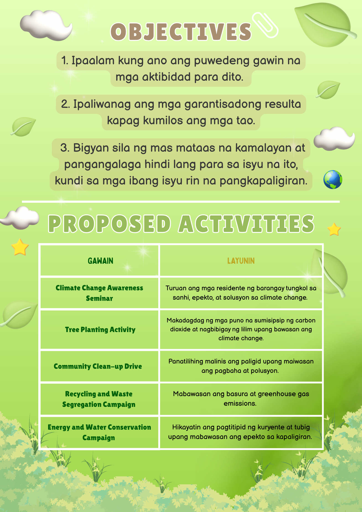
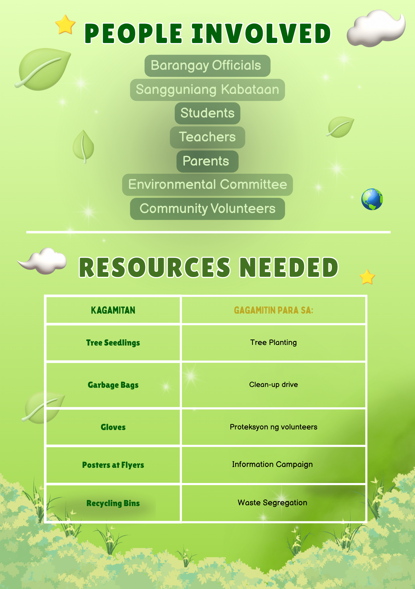
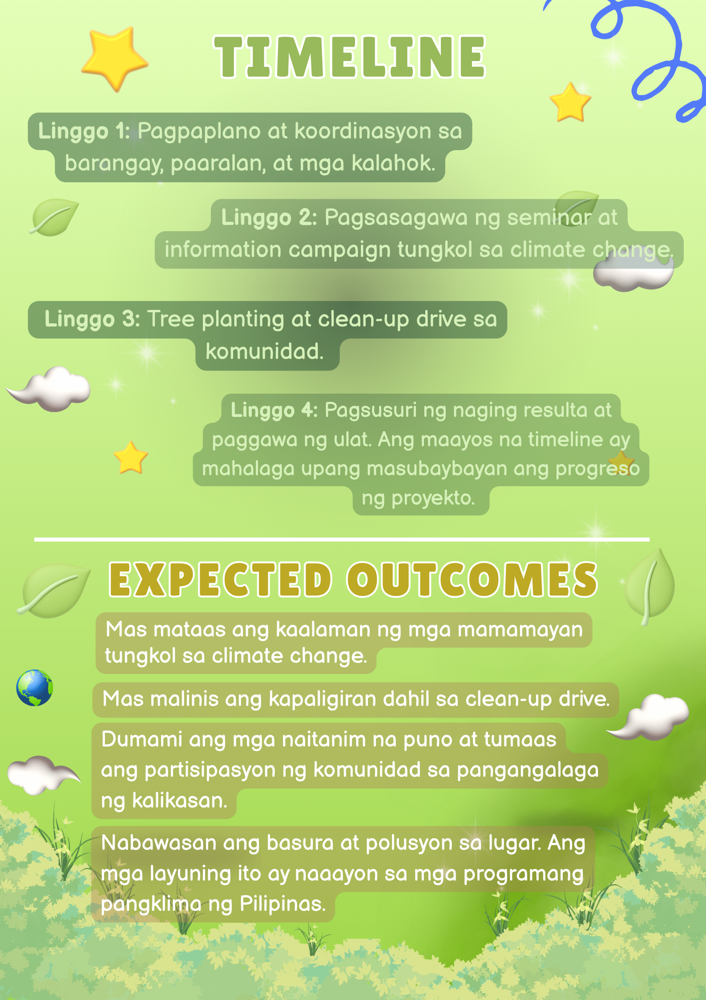
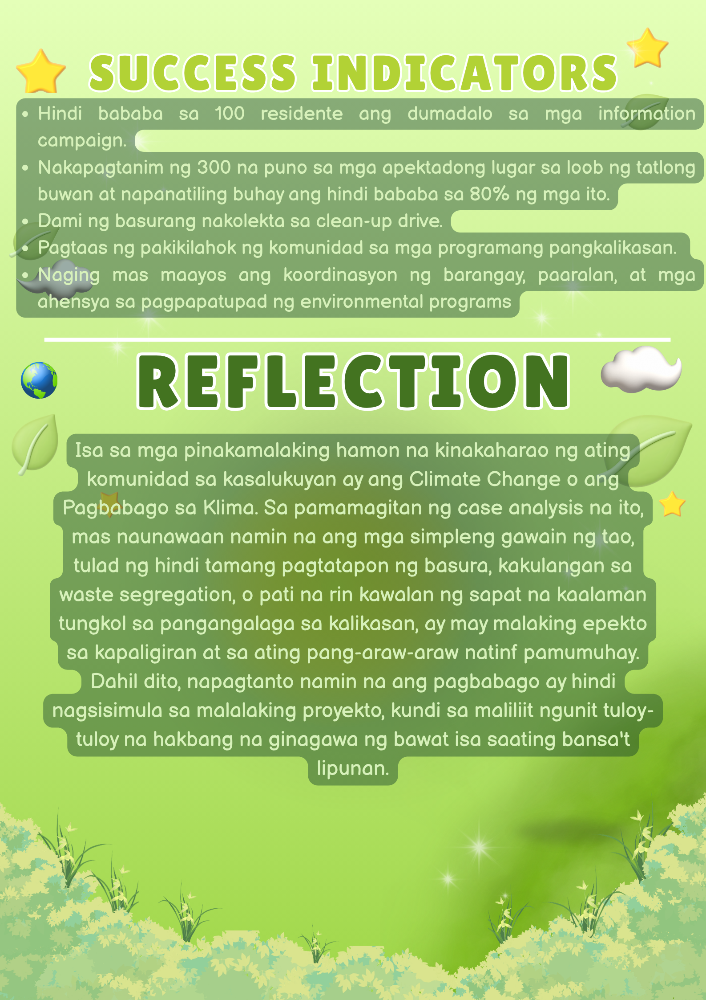
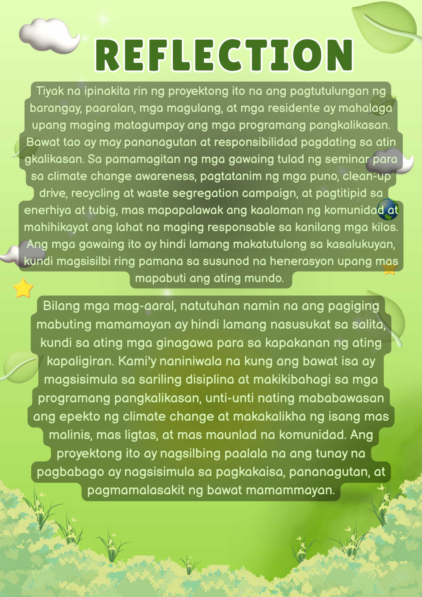
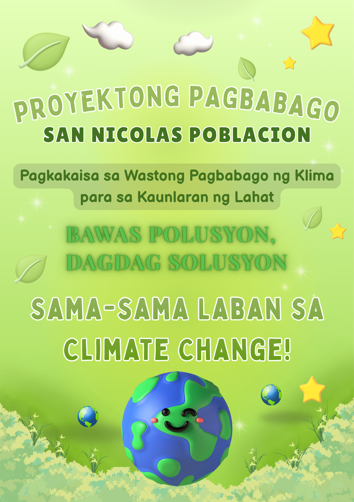

To demonstrate Dominican values, we must care for the environment and the world at large, not just ourselves. We can practice this by keeping our surroundings clean, minimizing waste, and helping those in need. Even small actions can make a difference when we do them with responsibility and concern for others.
Integrating Dominican values starts with being more mindful of the choices we make every day. Instead of waiting for someone else to do what is right, we can start with ourselves and take responsibility for our own actions.
Even through our everyday choices, choosing to do the right thing can show the values we have learned. We should respect others, treat everyone fairly, and help people in need.
By acting responsibly and compassionately, we can help solve social and environmental problems. In the way of integrating the Dominican Values, we can be acknowledged on how to care for others and the environment — good people lead to a great environment.
By simply through prayer and fulfilling our responsibilities — such as facing these issues and finding solutions for it — we are already making God's creation full of love. Lastly, if we fulfilled these actions, a better and more caring community will be there to welcome us.